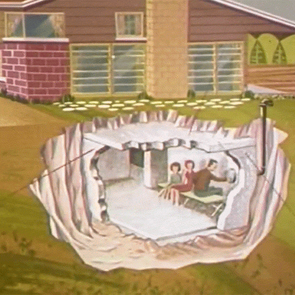
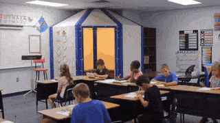
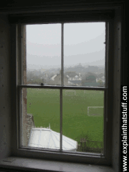

SOME GIFS TO SHOW THE DEMONSTRATION




General overview on how a tornado occurs
Tornadoes can destroy buildings, flip cars, and create deadly flying debris. Tornadoes are violently rotating columns of air that extend from a thunderstorm to the ground.
Happen anytime and anywhere;
Bring intense winds, over 200 MPH
Look like funnels.And lift roofs and debri
THE THREE BASIC PRINCIPLES TO BE FOLLOWED DURING AN TORNADO
1.GO TO A ROOMS OR BASEMENT OR STORM CELLAR
2.STAY AWAY FROM WIDOWS,DOORS AND OUTSIDE WALLS
3.DO NOT GET UNDER AN OVERPASS OR BRIDGE
COVER YOUR BODY WITH A BLANKET
**The most important thing to remember is DON'T PANIC!!!
If you are in a house
■ Avoid windows. Get in the basement and under some kind of sturdy protection (heavy table or work bench), or cover yourself with a mattress or sleeping bag.
■ Know where very heavy objects rest on the floor above (pianos, refrigerators, waterbeds, etc.) and do not go under them.
■ They may fall down through a weakened floor and crush you. Head protection, such as a helmet, can boost survivability also
If you are in a car or truck
■ Vehicles are extremely risky in a tornado. There is no safe option when caught in a tornado in a car, just slightly less-dangerous ones.
■ f the tornado is visible, far away, and the traffic is light, you may be able to drive out of its path by moving at right angles to the tornado. Seek shelter in a sturdy building possible.
■ If you can safely get noticeably lower than the level of the roadway,leave your car and lie in that area, covering your head with your hands.
If you are in a mobile home
■ Get out! Even if your home is tied down, it is not as safe as an underground shelter or permanent, sturdy building.
■ Go to one of those shelters, or to a nearby permanent structure, . Most tornadoes can destroy even tied-down mobile homes.
■ It is best not to play the low odds that yours will make it.
■ You sholud make you location availbale for your friends so that they can help.
■Know your area’s tornado risk. Know the signs of a tornado, including a rotating, funnel-shaped cloud; an approaching
■ Know the signs of a tornado, including a rotating, funnel-shaped cloud; an approaching cloud of debris; or a loud roar—similar to a freight train.
■ Sign up for your community’s warning system. The Emergency Alert System (EAS) and National Oceanic and Atmospheric Administration (NOAA) Weather Radio also provide emergency alerts. If your community has sirens, then become familiar with the warning tone.
■ Pay attention to weather reports. Meteorologists can predict when conditions might be right for a tornado.
■ Consider constructing your own safe room that meets FEMA or ICC 500 standards.
Go to the basement or take shelter in a small interior ground floor room such as a closet or hallway.
FOLLOW THESE STEPS TO BUILD YOUR TORNADO RESISTANT BULDING
Secure entry doors
Ensure that entry doors have a two-inch deadbolt lock and three hinges, with screws long
enough to secure the door and frame to the wall framing.
Streem stresses that the framing aspect is the most critical element, and it has
to be the most secure.
Brace garage doors
Your garage door—the largest potential opening in your home—is another vulnerable point,
Streem explains.If the garage door goes missing, is left open or is taken out, it
completely compromises the structure of your home.
Protect important documents and valuables
Recomended that storing your important papers and valuable possessions in a fire-proof safe or
safety deposit box to ensure that you’ll be able to access them after a tornado.
Install impact-resistant windows
Shattered windows can cause serious injury. The best protection—especially if you’re building
a new house or remodeling and existing one—is to install impact-resistant windows.
They are more expensive to buy, but they can be customized to the
space and provide better protection. Depending on where the house is located, they
also may be required by the local building code, especially in coastal areas.
Install wind-resistant roof structures
Roof sheathing and covering should be rated to resist high winds.
Generally, a home’s roof is attached with roofing nails, which are inserted at an angle,
but this kind of roof can come right off. Recomended that attaching roofs with hurricane clips,
which create a stronger connection between the roof and the house. The clips come in a range of
protections, depending on the clip you buy and the weight of your roof.
Prepare your home shelter
If you live in a tornado-prone area, it is recommended that preparing your
home shelter location by stocking it with essential items such as a battery-powered radio,
a flashlight, spare batteries, water and snack food like energy bars—anything you don’t have to cook.